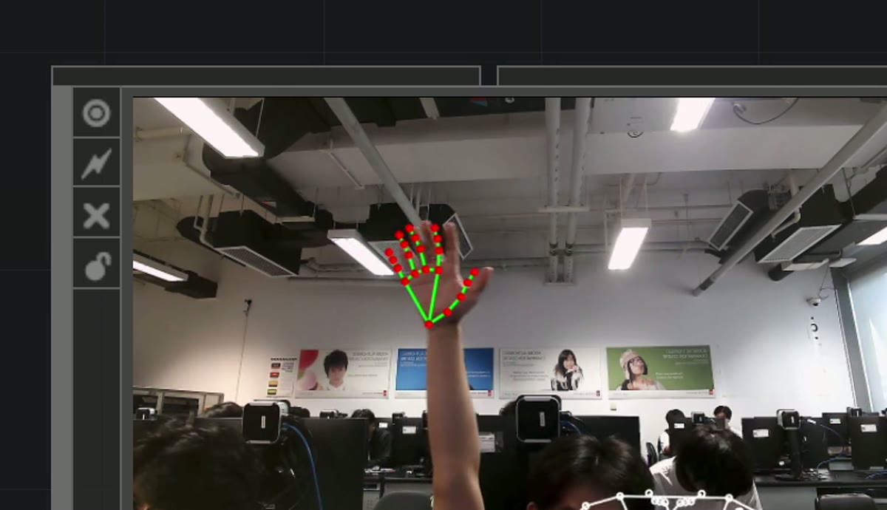

Work 01
Digital Media Technology — 2026
Growth
A branching structure that grows only while a hand is moving: a camera reads the hand in the room, and the path it takes becomes the trunk and the branches. Nothing is pre-drawn — each visit leaves a different tree, in a different colour, and the piece stops growing when the hand stops.
